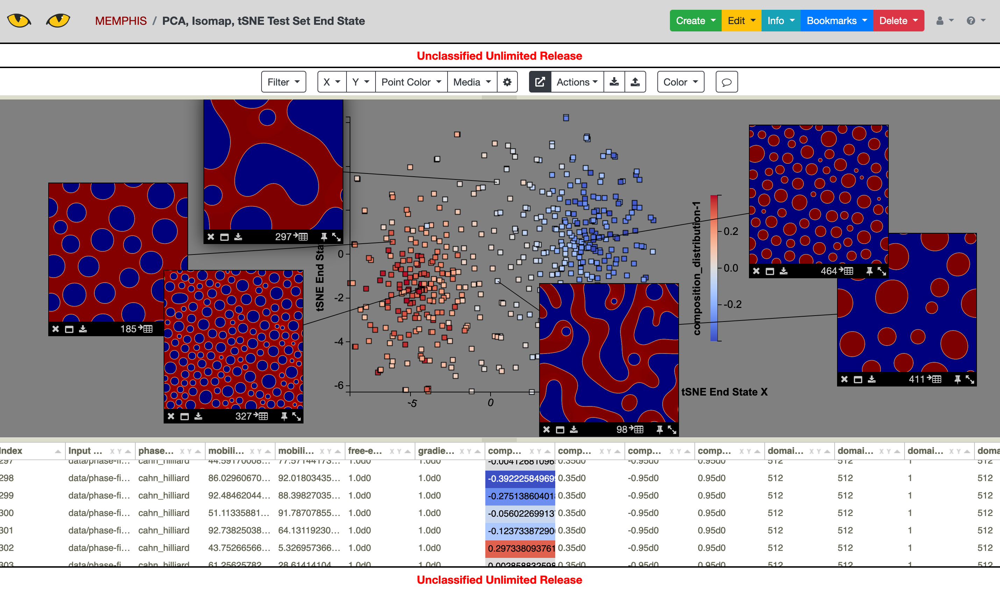
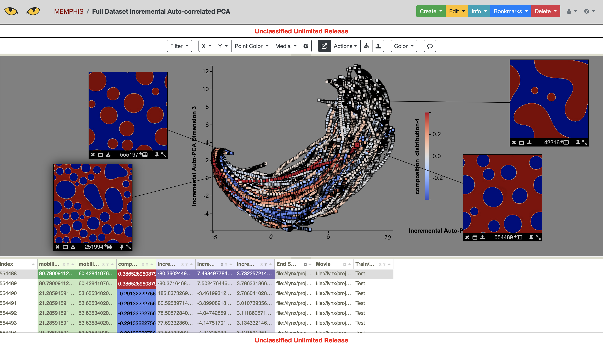

Example¶
Here we provide a step-by-step example using the data from the following paper:
Montes de Oca Zapiain, D., Stewart, J.A. & Dingreville, R. “Accelerating phase-field-based microstructure evolution predictions via surrogate models trained by machine learning methods.” npj Comput Mater 7, 3 (2021). https://doi.org/10.1038/s41524-020-00471-8
Test Data¶
We start with an easier computation using only the test data. We assume the test data is in the directory:
data/phase-field/test_data
Pre-processing¶
This directory contains workdir.1 to workdir.500, with each of these
directories containing an input deck for MEMPHIS in in.cahn_hilliard and
outputs from the simulation in out.cahn_hilliard_0.vtk to
out.cahn_hilliard_50000000.vtk, at intervals with a step size of 500,000.
To create an initial .csv table which includes the metadata for running the simulations, we use:
python -m table --create --ensemble data/phase-field/test_data/workdir.%d \
--output-dir data/phase-field/test_out \
--input-files in.cahn_hilliard \
--input-header "Input Deck" \
--csv-out metadata.csv \
--over-write \
--csv-index "Simulation Index"
Next we create movies of each of the simulations using the time steps provided:
python -m convert --ensemble data/phase-field/test_data/workdir.%d \
--input-files out.cahn_hilliard_%d.vtk \
--output-dir data/phase-field/test_out \
--output-format mp4 \
--over-write \
--csv-out movies.csv \
--csv-header Movie \
--field-var phase_field \
--color-scale 0 1
This step creates a mirrored directory structure in our output directory
data/phase-field/test_out. Each of the directories workdir.* in this
directory will contain a .mp4 file containing the generated videos. The videos
will have the name out.cahn_hilliard_phase_field.mp4 created by using
the root name out.cahn_hilliard_ and the field variable phase_field
provided in the command line call.
We also want to create images from the end state of the simulations:
python -m convert --ensemble data/phase-field/test_data/workdir.%d \
--input-files out.cahn_hilliard_50000000.vtk \
--output-dir data/phase-field/test_out \
--output-format jpg \
--over-write \
--csv-out end-state.csv \
--csv-header "End State" \
--field-var phase_field \
--color-scale 0 1
This command creates files out.cahn_hilliard_50000000.jpg in each of the workdir.*
subdirectories of the data/phase-field/test_out directory.
Now we can create a .csv table with file links to both the movies and the end state images using (from the output directory):
python -m table --join \
data/phase-field/test_out/metadata.csv \
data/phase-field/test_out/end-state.csv \
data/phase-field/test_out/movies.csv \
--output-dir data/phase-field/test_out \
--csv-out ps.csv \
--over-write \
--csv-no-index \
--ignore-index \
--csv-headers mobility_coefficients-1 mobility_coefficients-2 composition_distribution-1 "End State" "Movie" \
--uri-root-out file://memphis/phase-field/test_out \
--convert-cols "End State" "Movie"
The resulting .csv table includes file pointers to the movies and end state images stored in
the directory file://memphis/phase-field/test_out. Assuming the
permissions are set correctly for these files, the table ps.csv can be imported
into Slycat as a Parameter Space model. The Slycat visualization is shown below.
{kind=link}
Dimension Reduction¶
Dimension reduction can be performed using a variety of strategies and algorithms.
Single Time Step¶
The simplest dimension reduction is performed on a single time step for each simulation. For example:
python -m reduce --ensemble data/phase-field/test_data/workdir.%d \
--input-files out.cahn_hilliard_50000000.vtk \
--output-dir data/phase-field/test_out \
--output-file out.cahn_hilliard_PCA.rd.npy \
--algorithm PCA \
--num-dim 2 \
--over-write \
--field-var phase_field \
--auto-correlate --binary \
--xy-out auto-PCA-end-state.csv \
--xy-header "Auto-PCA End State"
This command produces a file auto-PCA-end-state.csv which contains the (x,y) coordinates.
This file can be joined into a .csv table that can be imported into Slycat, using (from the
output directory):
python -m table --join \
data/phase-field/test_out/metadata.csv \
data/phase-field/test_out/end-state.csv \
data/phase-field/test_out/movies.csv \
data/phase-field/test_out/auto-PCA-end-state.csv \
--output-dir data/phase-field/test_out \
--csv-out ps-PCA.csv \
--over-write \
--csv-no-index \
--ignore-index \
--uri-root-out file://memphis/phase-field/test_out \
--convert-cols "End State" "Movie"
The resulting file ps-PCA.csv can be imported into Slycat as a parameter space model.
The PCA coordinates can be plotted and the points colored according to composition distribution
as shown below.
{kind=link}
This can be repeated using different dimension reduction algorithms, for example using Isomap:
python -m reduce --ensemble data/phase-field/test_data/workdir.%d \
--input-files out.cahn_hilliard_50000000.vtk \
--output-dir data/phase-field/test_out \
--output-file out.cahn_hilliard_Isomap.rd.npy \
--algorithm Isomap \
--num-dim 2 \
--over-write \
--field-var phase_field \
--auto-correlate --binary \
--xy-out auto-Isomap-end-state.csv \
--xy-header "Auto-Isomap End State"
{kind=link}
Or tSNE:
python -m reduce --ensemble data/phase-field/test_data/workdir.%d \
--input-files out.cahn_hilliard_50000000.vtk \
--output-dir data/phase-field/test_out \
--output-file out.cahn_hilliard_auto_PCA.rd.npy \
--algorithm PCA \
--over-write \
--field-var phase_field \
--auto-correlate --binary \
--num-dim 30
python -m reduce --ensemble data/phase-field/test_out/workdir.%d \
--input-files out.cahn_hilliard_auto_PCA.rd.npy \
--output-dir data/phase-field/test_out \
--output-file out.cahn_hilliard_tSNE.rd.npy \
--algorithm tSNE \
--num-dim 2 \
--over-write \
--xy-out auto-tSNE-end-state.csv \
--xy-header "Auto-tSNE End State"
The first step uses auto-correlation and PCA to reduce the dataset to 30 dimensions. The second step does tSNE.
{kind=link}
Many of these algorithms lack several features that are necessary to complete the entire simulation acceleration pipeline. For example, Isomap and PCA operate only in-memory so that they cannot process extremely large datasets, e.g. a full ensemble. In addition, some of the algorithms cannot project a new data point into the reduced space after the fact. Most of them also cannot reconstruct a data point from the reduced space into the full space. Pre-processing, e.g. using auto-correlation, can also prevent reconstruction.
Nevertheless, the algorithms and pre-processing steps can be used to analyze intermediate results to better visualize/understand the ensemble.
All Time Steps¶
Of course, the dimension reduction algorithms can also be applied to the entire dataset, not just the end state, depending on how well the algorithm scales to large datasets. Since simulations generate massive amounts of data, algorithms such as Isomap and tSNE may not perform well enough to provide results for the entire dataset.
However, incremental and landmark versions of the algorithms are available, and these algorithms are also supported by the romans dimension reduction utility. A basic incremental algorithm is incremental PCA, which can be used as follows.
python -m reduce --ensemble data/phase-field/test_data/workdir.%d \
--input-files out.cahn_hilliard_%d.vtk \
--output-dir data/phase-field/test_out \
--output-file out.cahn_hilliard_inc_auto_PCA_10.rd.npy \
--algorithm incremental-PCA \
--field-var phase_field \
--auto-correlate --binary \
--over-write \
--csv-out incremental-auto-PCA.csv \
--csv-header "Incremental Auto-PCA" \
--output-model inc-auto-PCA.pkl \
--num-dim 10 \
--file-batch-size 1000
To use Slycat to visualize the results, use:
python -m table --join \
data/phase-field/test_out/metadata.csv \
data/phase-field/test_out/end-state.csv \
data/phase-field/test_out/movies.csv \
data/phase-field/test_out/incremental-auto-PCA.csv \
--output-dir data/phase-field/test_out \
--csv-out metadata-inc-auto-PCA.csv \
--over-write \
--uri-root-out file://memphis/phase-field/test_out \
--convert-cols "End State" Movie
python -m table --expand \
data/phase-field/test_out/metadata-inc-auto-PCA.csv \
--expand-header "Incremental Auto-PCA" \
--output-dir data/phase-field/test_out \
--csv-out ps-inc-auto-PCA.csv \
--plugin parameter_space \
--remove-expand-col \
--include-original-index \
--num-dim 3 \
--csv-no-index
{kind=link}
Time-Aligned Dimension Reduction¶
The dimension reduction utility includes a time-aligned dimension reduction meta-algorithm
which is ideally suited for numerical simulation output. The time-aligned algorithm perfoms
a reduction at each time step then aligns those reductions as a last step using the Kabsch
algorithm. This provides a natural way to divide the work and also respects the importance
of time in simulation data. The time-aligned reduction algorithm can be used by throwing the
--time-align argument, as shown below:
python -m reduce --ensemble data/phase-field/test_data/workdir.%d \
--input-files out.cahn_hilliard_%d.vtk \
--output-dir data/phase-field/test_out \
--output-file out.cahn_hilliard_time_aligned_PCA.rd.npy \
--algorithm PCA \
--time-align 10 \
--num-dim 2 \
--auto-correlate --binary \
--field-var phase_field \
--over-write \
--file-batch-size 500 \
--csv-out time-aligned-PCA.csv \
--csv-header "Time Aligned PCA"
The results of the time aligned reduction can be used to create a Slycat VideoSwarm model using:
python -m table --join \
data/phase-field/test_out/metadata.csv \
data/phase-field/test_out/end-state.csv \
data/phase-field/test_out/movies.csv \
data/phase-field/test_out/time-aligned-PCA.csv \
--output-dir data/phase-field/test_out \
--ignore-index \
--csv-out metadata-time-aligned-PCA.csv \
--csv-no-index \
--over-write \
--csv-headers mobility_coefficients-1 mobility_coefficients-2 composition_distribution-1 "End State" Movie "Time Aligned PCA" \
--uri-root-out file://memphis/phase-field/test_out \
--convert-cols "End State" Movie
python -m table --expand \
data/phase-field/test_out/metadata-time-aligned-PCA.csv \
--expand-header "Time Aligned PCA" \
--output-dir data/phase-field/test_out/vs-time-aligned \
--csv-out videoswarm.csv \
--plugin videoswarm \
--remove-expand-col \
--video-fps 25
{kind=link}
Warning
Currently VideoSwarm supports only videos written at 25 FPS.
Details on the time-aligned algorithm can be found in the publication:
Martin S., Sielicki, M. A., Gittinger, J., Letter, M., Hunt, W. L., and Crossno, P. J., “VideoSwarm: Analyzing Video Ensembles”, Visualization and Data Analysis 2019, Burlingame, CA, USA, 16-17 January 2019. https://doi.org/10.2352/ISSN.2470-1173.2019.1.VDA-685
Proxy Model Training¶
Once an appropriate dimension reduction has been performed, a proxy model can be trained on the simulation output. In the case of this example, we use auto-correlation followed by PCA. To train a proxy model using an LSTM neural network, we use:
python -m model --ensemble data/phase-field/test_out/workdir.%d[0:401] \
--input-file out.cahn_hilliard_inc_auto_PCA_10.rd.npy \
--train %d[20:90] \
--over-write \
--output-model LSTM-model.pkl \
--algorithm LSTM \
--num-dim 5 \
--LSTM-steps 10
python -m model --ensemble data/phase-field/test_out/workdir.%d[401:] \
--input-file out.cahn_hilliard_inc_auto_PCA_10.rd.npy \
--output-file LSTM-preds.px.npy \
--test %d[20:90] 11 \
--over-write \
--input-model data/phase-field/test_out/LSTM-model.pkl
The first command trains the model using the first 400 simulations, and the second produces predictions using the last 100 simulations. After a model has been trained, the optimization statistics can be plotted, using:
python -m validate --proxy \
--ensemble data/phase-field/test_out/workdir.%d[401:] \
--input-file out.cahn_hilliard_inc_auto_PCA_10.rd.npy \
--output-file data/phase-field/test_out/LSTM-predictions \
--input-pred-file LSTM-preds.px.npy \
--input-model data/phase-field/test_out/LSTM-model.pkl \
--test %d[10:90] 11
{kind=link}
{kind=link}
The validate command can also be used to show the variance captured using the dimension reduction algorithm:
python -m validate --reduction \
--input-model data/phase-field/test_out/inc-auto-PCA.pkl \
--output-file data/phase-field/test_out/pca-model-stats
Full dataset¶
To use the romans tools on the full phase-field dataset, a super (parallel) computer should
be used. The romans tools can be used in parallel with ipyparallel. Depending on the setup
of the cluster, the following commands/batch scripts would be used to perform an analysis on
the full phase-field dataset. The necessary steps are described below. The source code is
in the cluster directory of the romans repository.
To perform the incremental auto-correlated PCA reduction used in (de Oca Zapiain, et al.), the following batch script should first be run on the training set. The precise form of the batch script will depend on the cluster.
#!/bin/bash
# Copyright (c) 2021 National Technology and Engineering Solutions of Sandia, LLC.
# Under the terms of Contract DE-NA0003525 with National Technology and Engineering
# Solutions of Sandia, LLC, the U.S. Government retains certain rights in this software.
#SBATCH --account=your-account
#SBATCH --job-name=memphis
#SBATCH --partition=batch
#SBATCH --nodes=24
#SBATCH --ntasks-per-node=8
#SBATCH --time=18:00:0
module load python3
export PYTHONPATH=/users/your-user-name/romans:/users/your-user-name/romans/romans
profile=default
ipython profile create --parallel
echo "Launching Controller ..."
ipcontroller --ip='*' &
sleep 1m
echo "Launching Engines ..."
srun ipengine &
sleep 1m
echo "Launching Job ..."
python -m reduce --ensemble phase-field/training_data/workdir.%d \
--input-files out.cahn_hilliard_%d.vtk \
--output-dir phase-field/inc-auto-PCA/train \
--output-file out.cahn_hilliard_inc_auto_PCA.rd.npy \
--algorithm incremental-PCA \
--auto-correlate --binary \
--num-dim 10 \
--over-write \
--field-var phase_field \
--csv-out inc-auto-PCA-train.csv \
--csv-header "Incremental Auto-PCA" \
--file-batch-size 2500 \
--output-model inc-auto-PCA.pkl \
--restart phase-field/inc-auto-PCA/train/restart.pkl \
--parallel
Next, the test set can be reduced by projection using the model learned on the training set.
#!/bin/bash
# Copyright (c) 2021 National Technology and Engineering Solutions of Sandia, LLC.
# Under the terms of Contract DE-NA0003525 with National Technology and Engineering
# Solutions of Sandia, LLC, the U.S. Government retains certain rights in this software.
#SBATCH --account=your-account
#SBATCH --job-name=memphis
#SBATCH --partition=short,batch
#SBATCH --nodes=24
#SBATCH --ntasks-per-node=8
#SBATCH --time=4:00:0
module load python3
export PYTHONPATH=/users/your-user-name/romans:/users/your-user-name/romans/romans
profile=default
ipython profile create --parallel
echo "Launching Controller ..."
ipcontroller --ip='*' &
sleep 1m
echo "Launching Engines ..."
srun ipengine &
sleep 1m
echo "Launching Job ..."
python -m reduce --ensemble phase-field/test_data/workdir.%d \
--input-files out.cahn_hilliard_%d.vtk \
--output-dir phase-field/inc-auto-PCA/test \
--output-file out.cahn_hilliard_inc_auto_PCA.rd.npy \
--input-model phase-field/inc-auto-PCA/train/inc-auto-PCA.pkl \
--auto-correlate --binary \
--over-write \
--field-var phase_field \
--csv-out inc-auto-PCA-test.csv \
--csv-header "Incremental Auto-PCA" \
--parallel \
--file-batch-size 2500 \
Finally, a Slycat Parameter Space model can be generated using the ps-csv.py script in
cluster. The code is shown below as an example.
# Copyright (c) 2021 National Technology and Engineering Solutions of Sandia, LLC.
# Under the terms of Contract DE-NA0003525 with National Technology and Engineering
# Solutions of Sandia, LLC, the U.S. Government retains certain rights in this software.
# This script creates a Slycat parameter space model for the
# dimension reduction model on the cluster. We assume we
# have the files available:
#
# Phase Field Data:
# phase-field/training_data
# phase-field/test_data
#
# Media Files (see run-*-media.sh):
# phase-field/train_media
# phase-field/test_media
#
# Dimension Reduction (this can be any directory, for example inc-auto-PCA):
# phase-field/inc-auto-PCA/train/inc-auto-PCA-train.csv
# phase-field/inc-auto-PCA/test/inc-auto-PCA-test.csv
# The script should be run from the appropriate directory on the
# cluster, e.g. inc-auto-PCA. From there it locates the above files.
# S. Martin
# 6/28/2021
from algorithms.reduction import DimensionReduction
import romans.table as table
import os
import sys
# the training data and media are in fixed locations
train_data_dir = 'phase-field/training_data'
test_data_dir = 'phase-field/test_data'
train_media = 'phase-field/train_media'
test_media = 'phase-field/test_media'
# uri-root-out conversion (location of files on cluster)
uri_root = 'file://'
# flags to prevent re-running tasks
create_train = False
create_test = False
concat_train_test = False
expand_reduction = False
# do everything
create_all = True
# look for files relative to current directory
output_dir = os.getcwd()
# get .csv file in train or test directory
def get_csv_file (output_dir, train):
# the .csv files are always in train/*.csv and test/*.csv
train_dir = os.path.join(output_dir, train)
train_files = [file for file in os.listdir(train_dir) if os.path.isfile(os.path.join(train_dir, file))]
train_csv_files = [file for file in train_files if file.endswith(".csv")]
# check that there is only on .csv file
if len(train_csv_files) != 1:
print("Did not find a unique .csv file in " + train + " directory -- " + \
"could not generate parameter space .csv file.")
sys.exit()
# dimension reduction .csv file
return os.path.join(train_dir, train_csv_files[0])
# get training/testing .csv files
train_reduction = get_csv_file(output_dir, 'train')
test_reduction = get_csv_file(output_dir, 'test')
# get dimension reduction header from .csv file
with open(train_reduction, 'r') as f:
header = f.readline()
dimension_reduction_header = header.split(',')[1].strip()
# create training table
if create_train or create_all:
# create a metadata file for the test data
arg_list = ['--create',
'--output-dir', output_dir,
'--ensemble', os.path.join(train_data_dir, 'workdir.%d'),
'--input-files', 'in.cahn_hilliard',
'--input-header', 'Input Deck',
'--over-write',
'--csv-out', os.path.join(output_dir, 'metadata-train.csv'),
'--csv-index', 'Simulation Index']
table.main(arg_list)
print("Created metadata-train.csv.\n")
# join images, videos, and dimension reduction
arg_list = ['--join',
os.path.join(output_dir, 'metadata-train.csv'),
train_reduction,
os.path.join(train_media, 'end-state.csv'),
os.path.join(train_media, 'movies.csv'),
'--output-dir', output_dir,
'--csv-out', 'metadata-reduction-media-train.csv',
'--over-write',
'--ignore-index',
'--csv-no-index',
'--uri-root-out', uri_root + train_media,
'--convert-cols', 'End State', 'Movie']
table.main(arg_list)
print("Created metadata-reduction-media-train.csv.\n")
# create test table
if create_test or create_all:
# create a metadata file for the test data
arg_list = ['--create',
'--output-dir', output_dir,
'--ensemble', os.path.join(test_data_dir, 'workdir.%d'),
'--input-files', 'in.cahn_hilliard',
'--input-header', 'Input Deck',
'--over-write',
'--csv-out', os.path.join(output_dir, 'metadata-test.csv'),
'--csv-index', 'Simulation Index']
table.main(arg_list)
print("Created metadata-test.csv.\n")
# join images, videos, and dimension reduction
arg_list = ['--join',
os.path.join(output_dir, 'metadata-test.csv'),
test_reduction,
os.path.join(test_media, 'end-state.csv'),
os.path.join(test_media, 'movies.csv'),
'--output-dir', output_dir,
'--csv-out', 'metadata-reduction-media-test.csv',
'--over-write',
'--csv-no-index',
'--ignore-index',
'--uri-root-out', uri_root + test_media,
'--convert-cols', 'End State', 'Movie']
table.main(arg_list)
print("Created metadata-reduction-media-test.csv.\n")
# join train/test tables
if concat_train_test or create_all:
# now we concatenate the tables
arg_list=['--concat',
os.path.join(output_dir, 'metadata-reduction-media-train.csv'),
os.path.join(output_dir, 'metadata-reduction-media-test.csv'),
'--output-dir', output_dir,
'--csv-out', 'metadata-reduction-media.csv',
'--over-write',
'--add-origin-col', 'Train/Test',
'--origin-col-names', 'Train', 'Test']
table.main(arg_list)
print("Concatenated metadata-reduction-media.csv.\n")
# expand dimension reduction coordinates
if expand_reduction or create_all:
# test parameter space expansion (using full auto-PCA dataset)
arg_list = ['--expand', os.path.join(output_dir, 'metadata-reduction-media.csv'),
'--expand-header', dimension_reduction_header,
'--output-dir', output_dir,
'--csv-out', 'ps.csv',
'--plugin', 'parameter_space',
'--remove-expand-col',
'--include-original-index',
'--num-dim', '3',
'--csv-no-index',
'--over-write',
'--csv-headers', 'mobility_coefficients-1', 'mobility_coefficients-2',
'composition_distribution-1', 'End State', 'Movie', 'Train/Test',
dimension_reduction_header + " Dimension 1",
dimension_reduction_header + " Dimension 2",
dimension_reduction_header + " Dimension 3"]
table.main(arg_list)
print("Created ps.csv.\n")
Here is the full dataset reduction. It is (unsurprisingly) similar to the reduction on only the test data.
{kind=link}